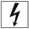
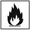
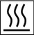
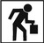
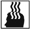

Wer ein Unternehmen führt ist verpflichtet, den Arbeitsschutz im Unternehmen zu organisieren. Hierfür ist es notwendig, für alle Tätigkeiten und Arbeitsmittel im Unternehmen die Gefährdungen zu ermitteln und konkrete Arbeitsschutzmaßnahmen festzulegen. Die Gefährdungsbeurteilung stellt somit das zentrale Dokument zur Lenkung des Arbeitsschutzes im Unternehmen dar.
Binden Sie Ihr Personal bei der Erstellung der Gefährdungsbeurteilung ein. So stellen Sie sicher, dass die "Erfahrungen aus der Praxis" einfließen, denn die Beschäftigten kennen ihre Arbeitsplätze am besten und können Ihnen wertvolle Hinweise geben.
Die vorliegende Muster-Gefährdungsbeurteilung führt nur die allgemein üblichen Gefährdungen und Schutzmaßnahmen bei der Montage von Rosten auf. Jede Montage unterliegt jedoch anderen Bedingungen. Es ändern sich Arbeitsverfahren und Arbeitsumgebungen und damit auch die Gefährdungen und Schutzmaßnahmen. Dies ist in der konkreten für jeden Einsatzfall zu erstellenden bzw. anzupassenden Gefährdungsbeurteilung zu berücksichtigen. Die vorliegende Muster-Gefährdungsbeurteilung muss also für jedes Projekt auf Aktualität geprüft werden, das heißt:
Weichen die Gefährdungen eines aktuellen Bauprojekts geringfügig von der einmal grundsätzlich erstellten Gefährdungsbeurteilung "Montage von Rosten" ab, müssen mindestens die Abweichungen zusätzlich dokumentiert werden. Dies kann in der Baustellendokumentation (u. a. in einer aussagekräftigen Montageanweisung) erfolgen.
Beachten Sie bitte, dass Ihre Führungskraft auf der Baustelle alle Informationen benötigt, um die Montagearbeiten sicher durchzuführen. Zu den Unterlagen gehört auch die Gefährdungsbeurteilung oder eine aussagekräftige Anweisung zur sicheren Durchführung der Montagearbeiten (z. B. Montageanweisung).
Sorgen Sie bitte für eine regelmäßige Unterweisung Ihres Personals über die mit den Arbeiten verbundenen Gefährdungen. Darüber hinaus sind die Beschäftigten in die Baustelle einzuweisen und auf die projektspezifischen Gefährdungen aufmerksam zu machen. Grundlage der Unterweisung ist die Gefährdungsbeurteilung. Unterweisungen sind zu dokumentieren.
Vergessen Sie in der Gefährdungsbeurteilung bitte nicht Personengruppen zu berücksichtigen, für die besondere Schutzvorschriften bestehen (z. B. Auszubildende, leistungsgeminderte Personen usw.).
Die Muster-Gefährdungsbeurteilung "Montage von Rosten" stellt je nach Arbeitsauftrag nur einen Teil der gesamten Gefährdungsbeurteilung Ihrer Tätigkeiten im Rahmen eines Bauvorhabens dar. Sie kann in die Gesamt-Gefährdungsbeurteilung der geplanten Bau- bzw. Montagearbeiten eingefügt werden.
Form und Inhalt der vorliegenden Muster-Gefährdungsbeurteilung ist ausschließlich eine Hilfestellung und nicht rechtsverbindlich. Sie erhebt keinen Anspruch auf Vollständigkeit.
"Roste" können z. B. sein: Metallgitterroste, (z. B. Schweißpress-, Press-, Einsteck- und Blechprofilroste) sowie Kunststoffgitterroste. Die verschiedenen Rosttypen sind in der DGUV Information 208-007 "Roste - Auswahl und Betrieb" beschrieben.
Unter "Montage" wird in dieser Gefährdungsbeurteilung das Transportieren, Verlegen, Verschrauben, Verschweißen, Demontieren und Instandsetzen von Rosten verstanden.
| Gefährdungen und Maßnahmen (Dokumentation) | ||
| Montage von Rosten | ||
| Firma: |
Informationen: ArbSchG, ArbStättV, ASR A1.3, ASR A2.1, BaustellV, GefStoffV, BetrSichV, PSA-BV, TRBS 1203, TRBS 2111, TRBS 2121, TRGS 524, DGUV Vorschrift 1, DGUV Vorschrift 3/4, DGUV Vorschrift 38, DGUV Regel 112-198 und 112-989, DGUV Regel 100-500 und 100-501, DGUV Information 209-003, DGUV Information 213-002, DGUV Information 208-007, DGUV Information 203-006, DGUV Information 201-011, DGUV Information 201-023, DGUV Information 215-830 |
|
| Arbeitsbereich/Baustelle/Objekt: |
Zeitraum der Arbeiten: |
|
| Verantwortliche Person, Aufsichtführung: |
erstellt durch: |
erstellt am: |
| Tätigkeiten: |
Bemerkungen: |
|
| G-Faktor | Ermittelte Gefährdungen und deren Beschreibung | Gefährdungen bewerten | Maßnahmen | Bearbeiter/ Berater |
Termin | wirksam | ||||||||||
| Risiko | Handlungs- bedarf |
|||||||||||||||
| G | M | K | ja | nein | ja | nein | ||||||||||
Mechanische Gefährdungen |
1.1 Ungeschützte bewegte Maschinenteile | |||||||||||||||
| nicht verkleidete Fang- und Einzugsstellen | Maschinen werden mit den von den Herstellern
vorgesehenen Schutzhauben betrieben. eng anliegende Arbeitskleidung |
|||||||||||||||
| 1.2 Teile mit gefährlichen Oberflächen | ||||||||||||||||
| scharfkantige Teile | Schutzhandschuhe langärmelige Arbeitskleidung Scharfe und/oder spitze Werkzeuge (z. B. Messer, Reißnadel) sind mit einem Schutz versehen. Scharfkantige Werkzeuge, z. B. Schraubendreher, werden nicht in der Arbeitskleidung getragen. Werkzeuge werden durch die Beschäftigten vor dem Einsatz auf ordnungsgemäßen Zustand geprüft |
|||||||||||||||
| scharfe und/oder spitze Werkzeuge | ||||||||||||||||
| ||||||||||||||||
| 1.3 bewegte Transportmittel, bewegte Arbeitsmittel | ||||||||||||||||
| Hebe- und Lastaufnahmeeinrichtungen sind für die Transportaufgabe nicht geeignet. | Transportvorgänge sind geplant und in der Montageanweisung eingetragen
(siehe 10.2). Krane, Winden etc. sind entsprechend der Transportaufgabe hinsichtlich der Tragfähigkeit und Reichweite ausgewählt. Lastaufnahme- und Anschlagmittel sind für die Transportaufgabe geeignet und ausreichend tragfähig. Anschlagmittel werden vorschriftsmäßig eingesetzt
Verkehrswege werden freigehalten (z. B. keine Lagerungen auf Verkehrswegen). Der Drehbereich von Kranen ist abgesperrt. Der Schwenkbereich der Last ist gesichert. Fahrzeuge werden nur mit Einweisung rückwärts bewegt. Einweiserinnen und Einwieser sind für ihre Aufgabe geschult. zum Bedienen von Transport- und bewegten Arbeitsmitteln nur geschulte und beauftragte Personen einsetzen Bewegte Transportmittel, bewegte Arbeitsmittel werden vor der Benutzung durch Sichtkontrolle geprüft und unterliegen der regelmäßigen Prüfung durch eine befähigte Person. |
|||||||||||||||
| keine ausreichende Tragfähigkeit | ||||||||||||||||
| unvorschriftsmäßiges Anschlagen und Transportieren von Lasten | ||||||||||||||||
| keine bzw. schlechte Verständigung zwischen Anschläger/in oder Einweiser/in und Hebezeugführer/in | ||||||||||||||||
| Sicherheitsabstand zwischen Transportmitteln bzw. bewegten Arbeitsmitteln und Teilen der Umgebung wird nicht eingehalten. | ||||||||||||||||
| Personen im Fahrweg von Fahrzeugen | ||||||||||||||||
| Bewegte Transportmittel, bewegte Arbeitsmittel sind nicht betriebs- und verkehrssicher. | ||||||||||||||||
| ||||||||||||||||
| 1.4 Unkontrolliert bewegte Teile | ||||||||||||||||
| Herabfallen von Lasten, Arbeitsmaterialien, Werkzeugen usw. | Handwerkzeuge und Kleinmaterial in festen Behältnissen transportieren und aufbewahren Arbeitsmaterial und Werkzeuge ordnungsgemäß ablegen Geländer mit Fußleisten Montage von Drahtgittern, Fangnetzen, Schutzgerüsten Benutzung einer Sicherheitszange zum Durchschneiden der Stahlbänder von Rostpaketen Beachtung der Kombination von Werkstoff, Munition und Setzbolzen beim Einsatz von Bolzenschubwerkzeugen Maschinen werden mit den von den Herstellern vorgesehenen Schutzhauben betrieben. Auf Winkelschleifmaschinen werden nur die zugelassenen Schleif- und Trennscheiben aufgespannt. Schutzhelm, Gesichtsschutz und Sicherheitsschuhe Roste werden so gelagert und gestapelt, dass sie nicht umfallen oder wegrutschen können. |
|||||||||||||||
| wegfliegende Teile | ||||||||||||||||
| ||||||||||||||||
| 1.5 Sturz, Ausrutschen, Stolpern, Umknicken | ||||||||||||||||
| auf Verkehrswegen | Beseitigen von Stolperstellen Beräumen der Arbeitsplätze und Verkehrswege von Materialien Beseitigen von Eis oder Schnee, sofern dies ohne erhöhte Gefährdung möglich ist Reinigen der Arbeitsplätze und Verkehrswege von Verunreinigungen (Öl, Fett und Ähnliches) |
|||||||||||||||
| auf Arbeitsplätzen | ||||||||||||||||
| ||||||||||||||||
| 1.6 Absturz | ||||||||||||||||
Absturz von Aufstiegen
|
geeigneten Aufstieg planen
|
|||||||||||||||
| Absturz von Arbeitsplätzen | ||||||||||||||||
| ||||||||||||||||
| Absturz von Gerüsten (Gerüste: Arbeits- und Schutzgerüste sowie fahrbare Arbeitsbühnen) |
Auf-, Um- und Abbau durch geeignete Beschäftigte unter Aufsicht einer befähigten Person Aufbau- und Verwendungsanleitung beachten (Gerüstersteller) Gerüste standsicher und tragfähig sowie betriebssicher aufbauen und erhalten Prüfung der Gerüste vor der Benutzung (Dokumentation)
nicht fertiggestellte Gerüstteile absperren und kennzeichnen (Erstellerseitig) Plan für die Benutzung und Gerüstkennzeichnung beachten ggf. wiederholte Prüfung (Erstellerseitig) |
|||||||||||||||
| ||||||||||||||||
| Absturz von Hubarbeitsbühnen durch
|
Bedienungsanleitung beachten Standsicherheit der Bühne gewährleisten
ggf. Anseilschutz im Arbeitskorb benutzen Rettungsmaßnahmen planen
|
|||||||||||||||
| ||||||||||||||||
 Elektrische Gefährdungen |
2.1 Elektrischer Schlag | |||||||||||||||
| spannungsführende Leitungen | Abschaltung, Abdeckung oder Abschranken spannungsführender Leitungen im Arbeits- und
Verkehrsbereich des Gerüstbaus
Zuleitungen vor Beschädigungen schützen arbeitstägliche Überprüfung des RCD-Schutzschalters im Baustromverteiler regelmäßige Prüfung der elektrischen Anlagen und Betriebsmittel durch Elektrofachkräfte oder befähigte Personen Sichtkontrolle der elektrischen Geräte vor Arbeitsbeginn keine Reparatur durch elektrotechnische Laien Verlassen der Konstruktion im Freien bei einem aufziehenden Gewitter Zusatzmaßnahmen bei erhöhter elektrischer Gefährdung Einhaltung von Sicherheitsabständen von unter Spannung stehenden Teilen, z. B. Überlandleitungen und Fahrdrähten (DGUV Vorschrift 3 und 4) Freischaltung, z. B. durch EVU, der unter Spannung stehenden Leitungen |
|||||||||||||||
| fehlerhafte elektrische Handwerkzeuge, Zuleitungen, Leitungsroller und Verteiler | ||||||||||||||||
| fehlende bzw. fehlerhafte Baustellenspeisepunkte | ||||||||||||||||
| Gewitter | ||||||||||||||||
| Annäherung an aktive Leitungen (Überlandleitungen, Fahrdrähte) | ||||||||||||||||
| ||||||||||||||||
Gefahrstoffe |
3.1 Gase 3.2 Dämpfe 3.3 Aerosole (Stäube, Rauche, Nebel) |
|||||||||||||||
| Freisetzung von Gefahrstoffen beim Bolzenschweißen | Beim Schweißen von oberflächenbeschichteten und Edelstahl-Werkstücken in engen Räumen
Schadstoffe absaugen oder für ausreichende Lüftung sorgen Bei nicht ausreichender Lüftung Atemschutz tragen Einsatz von elektrischen Handwerkzeugen, Leitungsrollern und Verteilern entsprechend DGUV Information 203-005 "Auswahl und Betrieb ortsveränderlicher elektrischer Betriebsmittel nach Einsatzbedingungen", z. B.: Vorsorgeuntersuchungen Beschäftigungsbeschränkungen Betriebsanweisung Befahrerlaubnis für Behälter und enge Räume Einsatz von Flurförderzeugen mit Elektroantrieb Gewährleistung einer ausreichenden Lüftung |
|||||||||||||||
| Arbeiten in Anlagen, in denen Gefahrstoffe freigesetzt werden | ||||||||||||||||
| Abgase von Transportmitteln (Krane, Flurförderzeuge, Fahrzeuge etc.) | ||||||||||||||||
| ||||||||||||||||
 Brand- und Explosions- gefährdungen |
5.1 Brennbare Feststoffe, Flüssigkeiten, Gase 5.2 Explosionsfähige Atmosphäre |
|||||||||||||||
| brennbare Feststoffe, Flüssigkeiten im Bereich des Bolzenschweißens und von Schleifarbeiten | Kontrolle der örtlichen Verhältnisse vor Arbeitsbeginn und Abstimmung der Schutzmaßnahmen mit den verantwortlichen Personen Erlaubnisschein und Betriebsanweisung Berücksichtigung des Explosionsschutzdokuments Brandschutzmaßnahmen treffen
Feuerlöscheinrichtungen bereitstellen Brandposten und Brandwache stellen Wartungszyklen der Gasanlage einhalten Sichtkontrolle der Kraftstoffanlage |
|||||||||||||||
| Arbeiten in Anlagen mit Explosionsgefahren | ||||||||||||||||
| undichte Kraftstoffanlagen bzw. Gasanlagen von Transportmitteln (Krane, Flurförderzeuge, Fahrzeuge etc.) | ||||||||||||||||
| ||||||||||||||||
 Thermische Gefährdungen |
6.1 Heiße Medien/Oberflächen | |||||||||||||||
| Verbrennungen durch Funkenflug | Aufstellen eines Schutzschirms Schutzkleidung Sicherheitsschuhe Schutzhandschuhe Kopf- und Augenschutz |
|||||||||||||||
| Verbrennungen durch heiße Metallspäne | ||||||||||||||||
| Verbrennungen durch heiße Oberflächen | ||||||||||||||||
|
Gefährdungen durch spezielle physikalische Einwirkungen |
7.1 Lärm | |||||||||||||||
| Lärmeinwirkung durch die Arbeitstätigkeit | Ermittlung der Lärmbelastungen Einsatz lärmgeminderter Arbeitsmittel (z. B. Winkelschleifer) Einsatz arbeitsmedizinisch untersuchter Mitarbeitender bei Grenzwertüberschreitungen (DGUV Grundsatz G 20 "Lärm"); sonst Anbietung von arbeitsmedizinischer Vorsorge Mitarbeiterunterweisung und Zurverfügungstellung von Gehörschutz Kennzeichnung der Lärmbereiche bzw. Arbeitsmittel und Baumaschinen Lärmkataster erstellen |
|||||||||||||||
| Lärmeinwirkung durch die Arbeitsumgebung | ||||||||||||||||
| ||||||||||||||||
| 7.5 Nicht ionisierende Strahlung | ||||||||||||||||
| Augen- und Hautschädigung beim Schweißen | Augen- und Gesichtsschutz entsprechend des Schweißverfahrens Schutzkleidung entsprechend des Schweißverfahrens |
|||||||||||||||
| 7.7 Elektromagnetische Felder | ||||||||||||||||
| Gefährdung durch hohe Magnetfelder beim Bolzenschweißen | Personen mit Herzschrittmacher bedienen keine Bolzenschweißgeräte |
|||||||||||||||
Gefährdungen durch Arbeits- umgebungs- bedingungen |
8.1 Klima (z. B. Hitze, Kälte) | |||||||||||||||
| Gesundheitsschäden durch Arbeiten in Bereichen mit übermäßiger Wärme oder Kälte | Zurverfügungstellung von geeigneter Kleidung gegen Sonneneinstrahlung Zurverfügungstellung und Benutzen von Sonnenschutzmitteln Zurverfügungstellung von Getränken Zurverfügungstellung und Benutzen von geeigneter Kleidung gegen Kälte, Wind und Regen Pausenzeiten regeln (DGUV Information 213-002 "Hitzearbeit: Erkennen - beurteilen - schützen") |
|||||||||||||||
| Gesundheitsschäden durch Sonneneinstrahlung, Kälte, Wind und Regen beim Arbeiten im Freien | ||||||||||||||||
| ||||||||||||||||
| 8.2 Beleuchtung, Licht | ||||||||||||||||
| mangelnde Beleuchtung der Verkehrswege auf der Baustelle | ausreichende Beleuchtung der Verkehrswege auf der Baustelle
|
|||||||||||||||
| mangelhafte Beleuchtung des Arbeitsbereiches | ||||||||||||||||
| ||||||||||||||||
 Physische Belastungen |
9.1 Schwere dynamische Arbeit 9.4 Einseitige dynamische Arbeit |
|||||||||||||||
| Gesundheitsschäden durch häufiges Heben, Tragen und Ablegen schwerer Lasten | Einsatz von Transport und Hebegeräten (Krane, Winden, Hubwagen, Gabelstapler etc.) Unterweisung über richtige Hebe- und Tragetechniken (LASI-Leitfaden LV 9 "Handlungsanleitung zur Beurteilung der Arbeitsbedingungen beim Heben und Tragen von Lasten") |
|||||||||||||||
| Gesundheitsschäden durch längeres Arbeiten in Zwangshaltung beim Befestigen der Roste | ||||||||||||||||
 Psychische Faktoren |
10.1 Ungenügend gestaltete Arbeitsaufgabe | |||||||||||||||
| nicht klar und eindeutig formulierte Arbeitsaufgaben | Erstellung einer projektbezogenen Gefährdungsbeurteilung Beschäftigte erhalten ausreichende Informationen zur sicheren Durchführung der Arbeitsaufgabe
|
|||||||||||||||
| Unkenntnis über die mit der Arbeit verbundenen Gefährdungen | ||||||||||||||||
| ||||||||||||||||
| 10.2 Ungenügend gestaltete Arbeitsorganisation | ||||||||||||||||
| Die Ausführungszeit ist der Arbeitsaufgabe nicht angemessen. | Durch Planung der Arbeitsabläufe und des Personaleinsatzes wird Termindruck vermieden. Abstimmung mit der Bauleitung über die durchzuführenden Arbeiten Abstimmung der Arbeitsdurchführung vor Arbeitsbeginn mit anderen Firmen im Arbeitsumfeld Der Ablauf der Arbeiten ist durchdacht und beschrieben, z. B. in einer
Bestellung einer Baustellenkoordination Unterweisung und Einweisung der Beschäftigten Unterweisung von Jugendlichen halbjährlich Beschäftigte werden planmäßig aus- und fortgebildet, um sie für die Arbeitsaufgaben zu qualifizieren Festlegung der Verantwortlichkeiten sowie der Entscheidungs- und Weisungsbefugnisse der Führungskräfte auf Baustellen inklusive der Aufgaben zum Arbeitsschutz schriftliche Bestellung der befähigten Personen zur Prüfung von Arbeitsmitteln schriftliche Beauftragung der Personen, die Geräte bedienen, z. B. Flurförderzeuge, Hubarbeitsbühnen, Winden, Krane etc. Benennung von Personen mit besonderen Aufgaben, z. B. Sicherungs-, Warn- und Absperrposten, Einweiser etc. Die Prüfung aller Arbeitsmittel und PSA wird planmäßig durch befähigte Personen durchgeführt. Die geprüften Arbeitsmittel und PSA sind entsprechend gekennzeichnet. Die Erste Hilfe wird sichergestellt.
Die Pflichtuntersuchungen, z. B. bei Arbeiten in Lärmbereichen oder beim Umgang mit Gefahrstoffen, werden vor Aufnahme der Arbeiten und danach in den vorgeschriebenen Abständen durchgeführt. Die Beschäftigten, die auf hochgelegenen Arbeitsplätzen arbeiten, sind für die Arbeiten körperlich geeignet. Den Mitarbeitenden wird arbeitsmedizinische Vorsorge angeboten |
|||||||||||||||
| mangelnde Kommunikation mit der Bauleitung | ||||||||||||||||
| Gefährdungen durch fehlende oder mangelhafte Koordination | ||||||||||||||||
| nicht durchdachter Arbeitsablauf | ||||||||||||||||
| mangelhafte innerbetriebliche Kommunikation | ||||||||||||||||
| nicht eindeutig geregelte Kompetenzen der Führungskräfte | ||||||||||||||||
| keine Bestellung der befähigten Personen für die Prüfung von Arbeitsmitteln (z. B. Gerüste, elektrische Handwerkzeuge etc.) | ||||||||||||||||
| keine Beauftragungen erteilt zur Bedienung von Geräten (z. B. Flurförderzeuge, Hubarbeitsbühnen, Winden, Krane etc.) | ||||||||||||||||
| mangelhafte Ausbildung des Personals für die Arbeitsaufgabe | ||||||||||||||||
| fehlende Prüfung der Arbeitsmittel und PSA | ||||||||||||||||
| keine Sicherstellung der Ersten Hilfe | ||||||||||||||||
| keine bzw. mangelhafte soziale Einrichtungen | ||||||||||||||||
| unzureichende arbeitsmedizinische Vorsorge | ||||||||||||||||
| ||||||||||||||||
| 10.4 Ungenügend gestaltete Arbeitsplatz- und Arbeitsumgebungsbedingungen | ||||||||||||||||
| mangelhafte Verkehrswege | Sicher begehbare Verkehrswege sind in ausreichender
Anzahl und Breite vorhanden, z. B. Geh- und Fahrwege, Aufstiege. Arbeitsplätze sind so gestaltet, dass die Arbeiten sicher durchgeführt werden können (siehe auch 1.6, 8.1, 8.2). |
|||||||||||||||
| mangelhafte Arbeitsplätze | ||||||||||||||||
| ||||||||||||||||